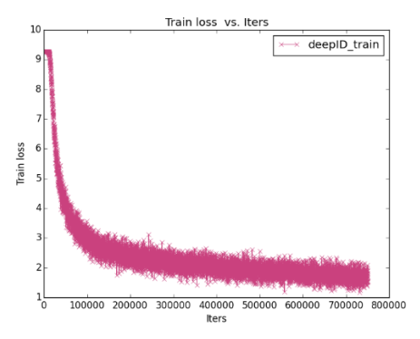
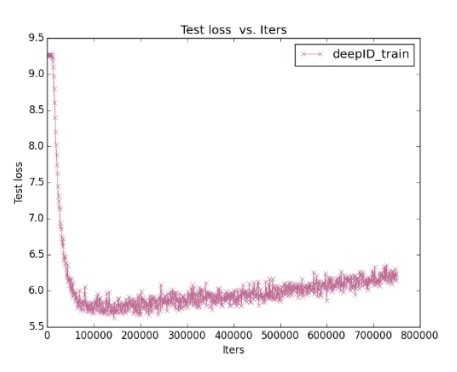
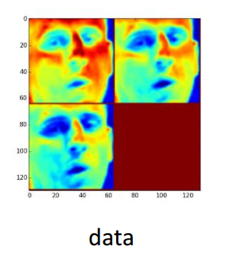
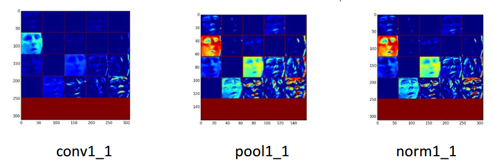

实验室深度学习平台介绍¶
概述¶
实验室深度学习资料放在ip为192.168.1.249的web服务器上。（内网台式机的浏览器访问http:://192.168.1.249，即可看到） 需要看的文档主要是深度学习平台->Caffe->Caffe使用手册。 欢迎大家浏览
AmaxGPU服务器5块C2075。由于服务器需要，该服务器重装系统，暂时还未重装Caffe依赖。后面几天我会重装Caffe依赖。今天2017/06/07。
K80服务器4块K80。由于景行锐创统一管理平台问题，还未加上该节点。
环境：Linux操作系统（RedHat）
使用之前¶
学习资料位置，内网台式机的浏览器访问http:://192.168.1.249
caffe使用文档位置
使用实验室深度学习框架，登录景行锐创统一门户
进入景行锐创，选择GPU服务器
Amax服务器用户
使用¶
整体流程¶
- 将数据集转换为lmdb，hdf5等caffe可以处理的格式。
- 配置训练模型的网络与solver，进行训练，得到模型参数。
- 使用模型进行分类等工作。
caffe编译使用¶
目的：每个用户的工程一般建立在~/caffe-master/examples/下，为了不相互干扰，每人在自己的主目录下编译一个caffe。 编译方法如下：
- 进入GPU服务器
- 通过内网台式机的浏览器192.168.2.82的超算平台使用VNC登录GPU服务器
- 没有账号的，找吴老师申请账号和密码，通过ssh连接GPU服务器。
- 不清楚的，内网台式机的浏览器访问http:://192.168.1.249，查看《使用GPU服务器.docx》。
在GPU服务器终端下，执行以下代码，编译caffe
wget http://192.168.1.249/caffe/caffe_usage.sh sh caffe_usage.sh
执行以上代码，caffe会安装在用户主目录的caffe-master文件夹中。 目录如下所示，假设用户名为test。
根目录（/）
home（系统的文件夹）
test（文件夹，找吴老师申请的账号命名的文件夹，系统生成的）
caffe-master（文件夹，编译生成的caffe主目录）
examples（编译生成的文件夹，用来包含的caffe自带的demo和自己创建的工程）
projectname（文件夹，自己创建的工程，自己命名）
- projectname_train_lmdb(文件夹，训练数据，包含data和label，通过mat2lmdb.py工具生成)
- projectname_test_lmdb(文件夹，测试数据，包含data和label，通过mat2lmdb.py工具生成)
- projectname_net.prototxt(网络配置文件)
- projectname_solver.prototxt(解决方案配置文件)
备注
projectname_net.prototxt中的后缀名prototxt是protobuf文件的后缀名，后缀名不可改。
默认网络配置文件的命名方式是projectname_net.prototxt（projectname是自己定义的工程名）
默认解决方案配置文件的命名方式是projectname_solover.prototxt（projectname是自己定义的工程名）
创建工程示例¶
假设创建的工程名为HSI，则在caffe-master/examples文件夹下创建HSI文件夹，作为工程主目录。 在该目录下新建HSI_net.prototxt，HSI_solver.prototxt文档
最终结构如下：
caffe-master（文件夹，生成的caffe主目录）
examples（生成的文件夹，用来包含的caffe自带的demo和自己创建的工程）
HSI(文件夹)
- HSI_train_lmdb(文件夹，训练数据，包含data和label，通过mat2lmdb.py工具生成)
- HSI_test_lmdb(文件夹，测试数据，包含data和label，通过mat2lmdb.py工具生成)
- HSI_net.prototxt(网络配置文件)
- HSI_solver.prototxt(解决方案配置文件)
数据采集与数据转换¶
可以先将数据都存储成mat格式。
mat转lmdb 功能 将特定格式的mat文件转换为lmdb，仅适用于单标签。
注释 mat数据格式必须存储为n*c*h*w的形式，四维，n表示样本编号，c表示通道数，h表示图像的高度(行)，w表示图像的宽度（列）。 标签的格式为n*1，一维，n表示标签个数。
一般，训练样本：测试样本 = 9:1，可根据需要修改。
单标签：将图像分类，如果有100类，则标签为0~99，整数。
含义 Indian pines图像是145*145*200的，要打标签的是145*145个像素点，每个像素点是200维，每个样本（1*1*200）对应一个标签，共有145*145个样本。 这样的训练样本只是200维的向量，为了充分利用CNN的卷积功能，我们将每个200维的向量reshape成20*10的图像来分析不同类别的光谱结构。
将这样的数据存储为mat文件，格式是n*c*h*w，n是样本个数145*145，c是通道数为1，h是图像高度为20，w是图像宽度为10。
使用 具体使用方法如下：
在GPU节点的Linux终端下
下载该工具
wget http://192.168.1.249/caffe/tools/mat2lmdb.py转换
python mat2lmdb.py data.mat label.mat XXX_lmdb(生成的是名为XXX_lmdb的文件夹)使用
- 将转换好的文件放在caffe-master/examples/HSI文件夹下
- 对训练数据和测试通过以上操作，则生成HSI_train_lmdb和HSI_test_lmdb。将其放在caffe-master/examples/HSI文件夹下
例子
获得mat文件，在终端通过输入以下命令获得
wget http://192.168.1.249/caffe/practice/HSI/train_data1.mat wget http://192.168.1.249/caffe/practice/HSI/train_label1.mat wget http://192.168.1.249/caffe/practice/HSI/test_data1.mat wget http://192.168.1.249/caffe/practice/HSI/test_label1.mat转换使用
wget http://192.168.1.249/caffe/tools/mat2lmdb.py python mat2lmdb.py train_data1.mat train_label1.mat HSI_train_lmdb python mat2lmdb.py test_data1.mat test_label1.mat HSI_test_lmdb
如果只是想实践一下，可以跳过五、六节，直接到第七节。
网络配置文件（HSI_net.prototxt）的修改¶
网络配置文件是用来指定训练模型，即输入数据，卷积，池化等操作的参数配置。
net分为数据层，视觉层，激活层和其他层（softmax_loss层，Inner Product层，accuracy层） 网络结构如下。
HSI_net.prototxt的下载
wget http://192.168.1.249/caffe/practice/HSI/HSI_net.prototxt
HSI_net.prototxt内容如下：
name: "HSI" #工程名
layer {
name: "data" #该层的名称
type: "Data" #该层的类型
top: "data" #该层的输出
top: "label" #该层的输出
data_param { #data层的参数
source: "examples/HSI/HSI_train_lmdb" #输入
batch_size: 128 #输入
backend: LMDB #输入的数据格式
}
include: { phase: TRAIN } #阶段，表明是训练阶段（该层仅在训练阶段使用）
}
layer { ##测试数据层
name: "data" #该层的名称
type: "Data" #该层的类型
top: "data" #该层的输出
top: "label" #该层的输出
data_param { #data层的参数
source: "examples/HSI/HSI_test_lmdb" #输入
batch_size: 209 #输入
backend: LMDB #输入的数据格式
}
include: { phase: TEST } #阶段，表明是测试阶段（该层仅在训练阶段使用）
}
layer {
name: "conv1" #该层的名称
type: "Convolution" #该层的类型
bottom: "data" #该层的输入
top: "conv1" #该层的输出
param { #权值
lr_mult: 1 #学习系数
}
param { #偏置
lr_mult: 0.1 #学习系数
}
convolution_param { #卷积的参数
num_output: 64 #过滤器的个数
kernel_size: 9 #过滤器的大小
stride: 1 #卷积的步长
pad: 0 #指定在输入的每一边加上多少个像素
weight_filler { #权重的初始化方法
type: "gaussian" #类型，高斯。
std: 0.001 #高斯的标准平方差
}
bias_filler { #偏置的初始化方法
type: "constant" #类型，常数
value: 0 #偏置是0常数
}
}
}
layer { #激活层
name: "relu1" #名称
type: "ReLU" #激活函数，一般为ReLU，以前是sigmoid
bottom: "conv1" #输入
top: "conv1" #输出
}
layer { #卷积层
name: "conv2"
type: "Convolution"
bottom: "conv1"
top: "conv2"
param {
lr_mult: 1
}
param {
lr_mult: 0.1
}
convolution_param {
num_output: 32
kernel_size: 1
stride: 1
pad: 0
weight_filler {
type: "gaussian"
std: 0.001
}
bias_filler {
type: "constant"
value: 0
}
}
}
layer { #激活层
name: "relu2"
type: "ReLU"
bottom: "conv2"
top: "conv2"
}
layer { #卷积层
name: "conv3"
type: "Convolution"
bottom: "conv2"
top: "conv3"
param {
lr_mult: 0.1
}
param {
lr_mult: 0.1
}
convolution_param {
num_output: 1
kernel_size: 3
stride: 1
pad: 0
weight_filler {
type: "gaussian"
std: 0.001
}
bias_filler {
type: "constant"
value: 0
}
}
}
layer { #全连接层
name: "ip1" #该层的名称
type: "InnerProduct" #该层的类型
bottom: "conv3" #该层的输入
top: "ip1" #该层的输出
param { #参数
lr_mult: 1 #学习率系数
}
param {
lr_mult: 2 #学习率系数
}
inner_product_param {
num_output: 17 #过滤器（filfter)的个数
weight_filler { #权重初始化
type: "xavier" #vaxier算法
}
bias_filler { #偏置初始化
type: "constant" #常数
}
}
}
layer { #准确度层
name: "accuracy" #该层的名称
type: "Accuracy" #该层的类型
bottom: "ip1" #该层的输入
bottom: "label" #该层的输入
top: "accuracy" #该层的输出
include {
phase: TEST #表明阶段，测试阶段（该层仅测试阶段使用）
}
}
layer { #损失函数层
name: "loss" #该层的名称
type: "SoftmaxWithLoss" #该层的类型
bottom: "conv3" #该层的输入
bottom: "label" #该层的输入
top: "loss" #该层的输出
}
数据层
数据层用于输入lmdb，hdf5等格式的数据。
lmdb为例
layer {
name: "data" #该层的名称
type: "Data" #该层的类型
top: "data" #该层的输出
top: "label" #该层的输出
data_param { #data层的参数
source: "examples/HSI/HSI_train_lmdb" #输入
batch_size: 128 #批处理大小
backend: LMDB #输入的数据格式
}
include: { phase: TRAIN } #阶段，表明是训练阶段还是测试阶段
}
卷积层
卷积层，是卷积神经网络（CNN）的核心层。
示例：
layer {
name: "conv1" #该层的名称
type: "Convolution" #该层的类型
bottom: "data" #该层的输入
top: "conv1" #该层的输出
param {
lr_mult: 1
}
param {
lr_mult: 0.1
}
convolution_param { #卷积的参数
num_output: 64 #过滤器的个数
kernel_size: 9 #过滤器的大小
stride: 1 #卷积的步长
pad: 0 #指定在输入的每一边加上多少个像素
weight_filler { #权重的初始化方法
type: "gaussian" #类型，高斯。
std: 0.001 #高斯的标准平方差
}
bias_filler { #偏置的初始化方法
type: "constant" #类型，常数
value: 0 #偏置是0常数
}
}
}
卷积层
lr_mult: 学习率的系数，最终的学习率是这个数乘以solver.prototxt配置文件中的base_lr。
num_output: 卷积核（filter)的个数
kernel_size: 卷积核的大小。
stride: 卷积核的步长，默认为1。
pad: 扩充边缘，默认为0，不扩充。 扩充的时候是左右、上下对称的，比如卷积核的大小为5*5，那么pad设置为2，则四个边缘都扩充2个像素，即宽度和高度都扩充了4个像素,这样卷积运算之后的特征图就不会变小。
weight_filler: 权值初始化。 默认为“constant",值全为0，很多时候我们用" gaussian "算法来进行初始化。
bias_filler: 偏置项的初始化。一般设置为"constant",值全为0或者用" gaussian "算法来进行初始化。
bias_term: 是否开启偏置项，默认为true, 开启
输入：n*c0*w0*h0
输出：n*c1*w1*h1
其中，c1就是参数中的num_output，生成的特征图个数
w1=(w0+2*pad-kernel_size)/stride+1;
h1=(h0+2*pad-kernel_size)/stride+1;
如果设置stride为1，前后两次卷积部分存在重叠。如果设置pad=(kernel_size-1)/2,则运算后，宽度和高度不变。
池化层
为了减少运算量和数据维度而设置的一种层
kernel_size: 池化核大小。
pool: 池化方法，默认为MAX。目前可用的方法有MAX, AVE
pad: 和卷积层的pad的一样，进行边缘扩充。默认为0
stride: 池化的步长，默认为1。一般我们设置为2，即不重叠。
激活层
对输入数据进行激活操作（实际上就是一种函数变换），是逐元素进行运算的。从bottom得到一个blob数据输入，运算后，从top输入一个blob数据。在运算过程中，没有改变数据的大小，即输入和输出的数据大小是相等的。
示例
layer {
name: "relu1"
type: "ReLU"
bottom: "conv1"
top: "conv1"
}
常用的激活函数有sigmoid, tanh, relu等，下面主要介绍RELU。
ReLU是目前使用最多的激活函数，主要因为其收敛更快，并且能保持同样效果。
标准的ReLU函数为max(x, 0)，当x>0时，输出x; 当x<=0时，输出0
f(x)=max(x,0)
可选参数：
negative_slope：默认为0. 对标准的ReLU函数进行变化，如果设置了这个值，那么数据为负数时，就不再设置为0，而是用原始数据乘以negative_slope
全连接层
全连接层，把输入当作成一个向量，输出也是一个简单向量（把输入数据blobs的width和height全变为1）。
输入： n*c0*h*w
输出： n*c1*1*1
示例：
layer {
name: "ip1" #该层的名称
type: "InnerProduct" #该层的类型
bottom: "conv3" #该层的输入
top: "ip1" #该层的输出
param { #参数
lr_mult: 1 #学习率系数
}
param {
lr_mult: 2 #学习率系数
}
inner_product_param {
num_output: 17 #过滤器（filfter)的个数
weight_filler { #权重初始化
type: "xavier" #vaxier算法
}
bias_filler { #偏置初始化
type: "constant" #常数
}
}
}
由于标签有17个，所以在全连接层的num_output的个数至少为17个，可以多，不可少。
accuracy层
输出分类（预测）精确度，只有test阶段才有，因此需要加入include参数。
层类型：Accuracy
layer {
name: "accuracy" #该层的名称
type: "Accuracy" #该层的类型
bottom: "ip1" #该层的输入
bottom: "label" #该层的输入
top: "accuracy" #该层的输出
include {
phase: TEST #表明阶段，测试阶段（该层仅测试阶段使用）
}
}
Loss层
layer {
name: "loss" #该层的名称
type: "SoftmaxWithLoss" #该层的类型
bottom: "conv3" #该层的输入
bottom: "label" #该层的输入
top: "loss" #该层的输出
}
#单标签一般使用SoftmaxWithLoss
#多标签一般使用EuclideanLoss
解决方案文件配置solver.prototxt¶
Solver方法一般用来解决loss函数的最小化问题。对于一个数据集D，需要优化的目标函数是整个数据集中所有数据loss的平均值。
HSI_solver.prototxt的下载
wget http://192.168.1.249/caffe/practice/HSI/HSI_solver.prototxt
HSI_solver.prototxt的参数 参数设置：
net : “examples/HSI/HSI_net.prototxt” #网络配置文件的指向
test_iter : 5 #样本总数/批处理个数（批处理个数在网络配置文件的data层配置）
test_interval : 1000 #训练时迭代次数
base_lr : 0.001 #基本学习率
momentum : 0.9 #动量
weight_decay: 0 #
display : 100 #迭代多少次显示一次
max_iter : 150000 #最大迭代次数
snapshot : 5000 #迭代多少次保存一下结果（caffemodel和solverstate）
snapshot_prefix : “examples/HSI/HSI” #保存结果（caffemodel和solverstate）的前缀，实际名称是$(snapshot_prefix)_iter_$(迭代次数). caffemodel和$(snapshot_prefix)_iter_$(迭代次数). solverstate
solver_mode: GPU #使用cpu还是gpu进行训练。cpu训练，solver_mode: CPU
device_id: 0 #使用哪一个gpu进行训练。设备号从0开始。该参数不写，默认为0
训练¶
总共需要的文件 HSI_net.prototxt(网络模型), HSI_solver.prototxt(解决方案)，HSI_train_lmdb, HSI_test_lmdb。
HSI_net.prototxt的下载
wget http://192.168.1.249/caffe/practice/HSI/HSI_net.prototxt
HSI_solver.prototxt的下载
wget http://192.168.1.249/caffe/practice/HSI/HSI_solver.prototxt
训练 在caffe主目录下输入以下命令
./build/tools/caffe train --solver examples/HSI/HSI_solver.prototxt 2>&1 |tee examples/HSI/HSI_train.log
HSI_train.log：输出的日志，自己定义。
在已训练的参数上继续训练 准备：可以通过以下命令获得HSI_iter_10000.caffemodel和HSI_iter_10000.solverstate
wget http://192.168.1.249/caffe/practice/HSI/HSI_iter_10000.caffemodel
wget http://192.168.1.249/caffe/practice/HSI/HSI_iter_10000.solverstate
./build/tools/caffe train --solver examples/HSI/HSI_solver.prototxt --snapshot examples/HSI/HSI_iter_10000.solverstate 2>&1 |tee examples/HSI/HSI_resume.log
HSI_iter_10000.caffemodel(已训练的迭代10000次的模型) HSI_resume.log：输出的日志，自己定义。
测试
./build/tools/caffe test --model examples/HSI/HSI_net.prototxt --weights examples/HSI/HSI_iter_10000.caffemodel 2>&1 |tee examples/HSI/HSI_test.log
HSI_test.log：输出的日志，自己定义。
工具使用¶
caffe自带以及自己写的脚本。
详细使用说明在
使用caffe自带convert_imageset转换lmdb
- 将图像和标签进行组织，然后使用convert_imageset转换
组织形式
mat转hdf5
- 将特定格式的mat文件转换为lmdb，适用于多标签。
- 数据的mat格式必须存储为n*c*h*w的形式，四维，n表示样本编号，c表示通道数，h表示图像的高度(行)，w表示图像的宽度（列）。
- 标签的mat格式必须存储为n*c*h*w的形式，四维，n表示样本编号，c表示通道数，h表示图像的高度(行)，w表示图像的宽度（列）。
计算图像均值
- 使用caffe自带的compute_imgmean计算图像均值
画网络图
- 根据网络配置文件XXX_net.prototxt画出网络图
根据日志画Loss曲线
 

画特征图（Feature Map）
 


将caffemodel转换为mat
保存网络中间结果
- 保存每一层神经元处理后的特征图以及特征值。
deepID的文档¶
增加deepID使用文档和分析文档，在http://192.168.1.249/doku.php/平台/深度学习平台/caffe例子/face_recognition都可以找到。 practice/face_recognition/face_recognition_all.pdf practice/face_recognition/ caffe-face_recognition.pdf